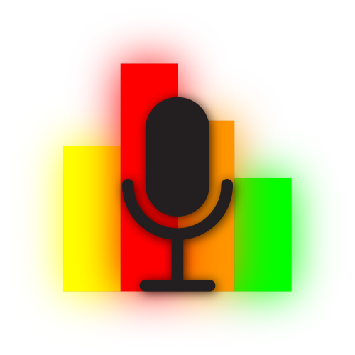

This is a project for NWAPW to adjust the volume level in your headset based off input sound level to cancel out loud sounds coming from your outside environment.
Ambient Sound is a simple, easy to use program that uses system input levels to instantaneously cancel surrounding noise. To start, choose your input device/microphone near the top-center of the interface, which will determine where input sound level is detected. The program currently allows you to choose between two speeds of sound level detection. Relaxed mode will take in sound levels and adjust your output accordingly at a slower rate, while fast mode will do this at a much faster rate. The minimum and maximum output volume can also be adjusted using the two bars in the middle of the interface. Once these steps are completed, the program can simply be left running in the background, and will ensure that you will never again be bothered by the annoying sounds in your surrounding environment.